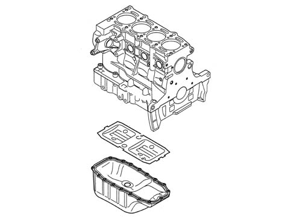

1020A crank case oil sump
- Path
- Descriptions > 10 ENGINE > 1020 CRANKCASE SUMP AND COVERS > 1020A crank case oil sump
- Kind
- system description
- Applies to
- engines: 1.3 JTD 16v; all production periods
- Interactive page
- https://sloeber94.github.io/elrnDB-fPnd/en/#/2750900
Applies to: engines: 1.3 JTD 16v; all production periods
The oil sump is a structural part of the engine with mechanical functions; its job is to house the engine lubricating oil.
It is made from pressed steel and comprises the threaded hole with plug for draining the engine oil.
The seal with the crankcase is ensured by a bead of silicone sealant.
There is a wall between the crankcase and oil sump which, apart from avoiding a shake-up of the engine oil (caused by the vehicle's movements), ensures that the level remains constant by removing excess engine oil as the small end bearing caps pass in cycles.
